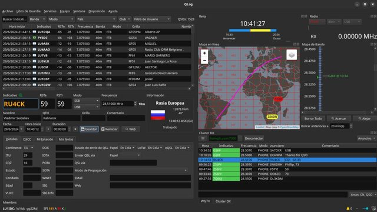
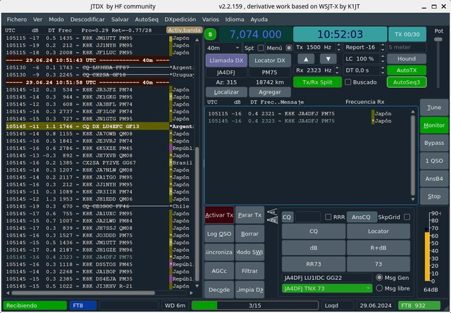
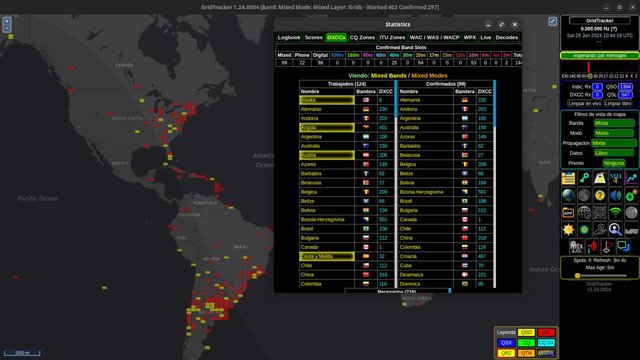
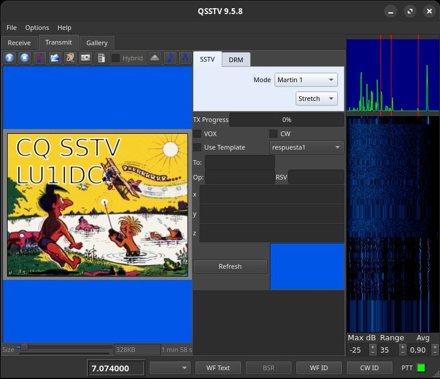
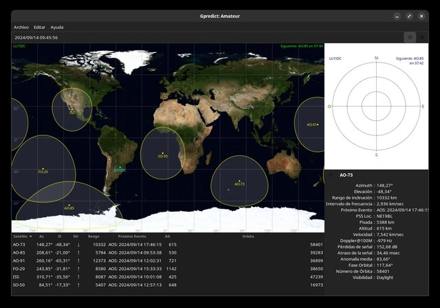

QLog
QLog es una aplicación de registro de Radioaficionado para Linux y Windows. Está basada en el framework Qt y utiliza SQLite como base de datos. QLog tiene como objetivo ser lo más simple posible, pero proporcionar todo lo que el operador espera de un registro.
https://github.com/foldynl/QLog
JTDX
JTDX es una bifurcación de WSJT-X, un programa de computadora dedicado a la comunicación de radioaficionado utilizando señales muy débiles. El programa funciona igualmente bien en sistemas Windows, Macintosh y Linux, y hay paquetes de instalación disponibles para las tres plataformas.
https://sourceforge.net/projects/jtdx/
Gridtracker
GridTracker es un almacén de información de radioaficionado presentado en una interfaz fácil de usar, desde decodificaciones de tráfico en vivo, libros de registro, informes de puntos en tiempo real, clima, condiciones solares actuales ¡y más!
https://gridtracker.org/
QSSTV
QSSTV es un programa informático diseñado para la recepción y transmisión de imágenes de televisión de exploración lenta (SSTV)
https://www.qsl.net/on4qz/
Gpredict
Gpredict es una aplicación de seguimiento de satélites en tiempo real y predicción de órbitas. Puede rastrear un gran número de satélites y mostrar su posición y otros datos en listas, tablas, mapas y gráficos polares (vista de radar). Gpredict también puede predecir el tiempo de futuros pases de un satélite y proporcionarte información detallada sobre cada pase.
https://oz9aec.dk/gpredict/